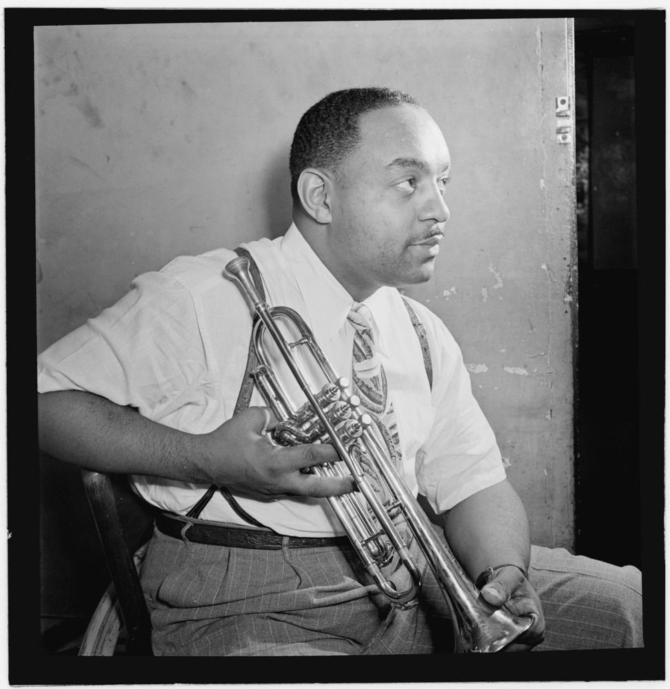

故事
她年輕時寫的一首歌，被 Billie Holiday 錄成了唱片。她是歌手 Carmen McRae，1920 年生在紐約哈林區。她八歲學鋼琴，十七歲認識了 Billie Holiday。
1939 年，Billie 錄下她寫的 Dream of Life。她先當鋼琴手，在 Benny Carter 等人的樂團裡工作。她一直說，Billie 是她最大的影響。

她唱歌咬字很清楚，常常故意唱在拍子後面一點。1990 年，她錄了一整張 Thelonious Monk 的歌，叫 Carmen Sings Monk。下次聽她唱歌，想想那首被前輩錄下的早年作品。
故事後面
Carmen McRae 年輕時寫的 Dream of Life，被 Billie Holiday 在一九三九年錄成唱片。
她先以鋼琴手身分工作，後來成為重要的爵士歌手，一直說 Billie 是她最大的影響。
她咬字非常清楚，常故意唱在拍子後面一點。一九九〇年她錄了一整張 Thelonious Monk 的歌。
這樣聽
聽她怎麼把 Monk 彎彎曲曲的旋律唱得清清楚楚。
逐句英文
A song she wrote as a young woman was recorded by Billie Holiday.
She was singer Carmen McRae, born in Harlem, New York, in 1920.
She studied piano at eight and met Billie Holiday at seventeen.
In 1939 Billie recorded her song Dream of Life.
She first worked as a pianist, in bands such as Benny Carter's.
She always named Billie as her biggest influence.
Her diction was crystal clear, and she often sang a little behind the beat.
In 1990 she recorded a whole album of Monk tunes, Carmen Sings Monk.
Next time you hear her, think of the early song her idol recorded.
查證筆記與出處
舊標題「十九歲寫的」是推算，原始寫作年份待查，已改成「年輕時」。「唱在拍子後面」為樂評常見描述。
一分鐘影片版在 Instagram @jazz101tw。